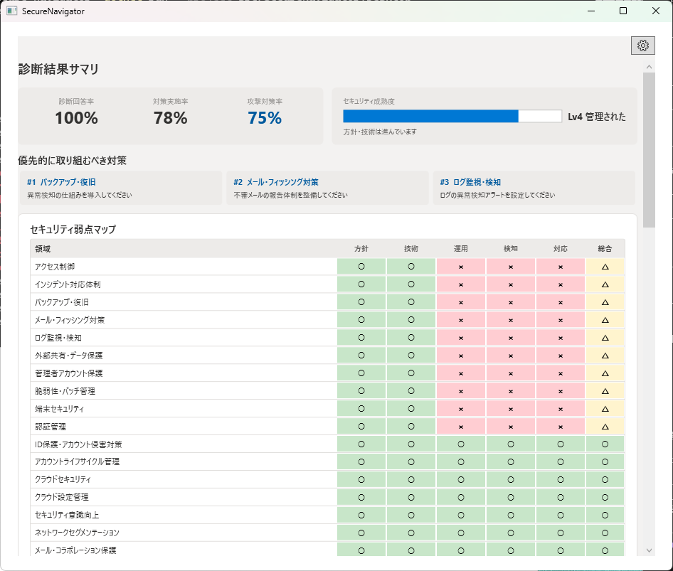
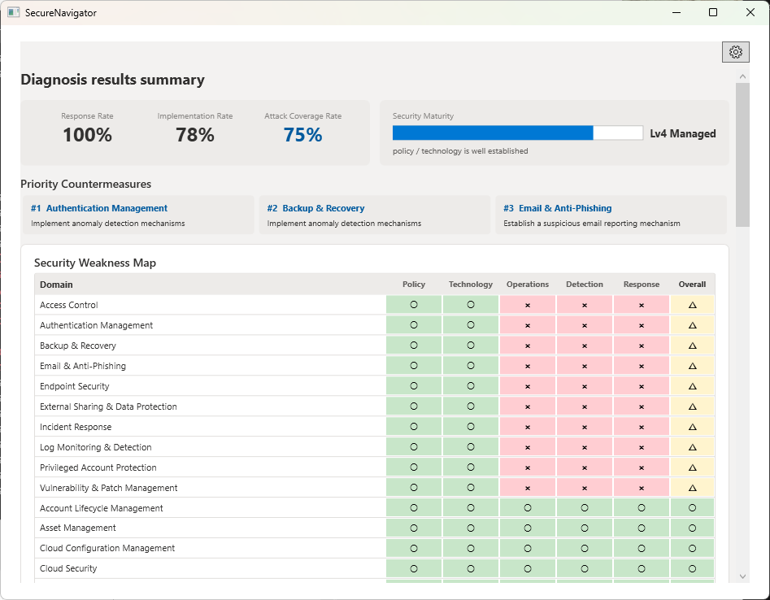

セキュリティ対策を攻撃視点とガイドラインで整理し、レポートへ変換する
想定攻撃に対する防御上の弱点を分析し、着手候補を整理。説明・報告・改善検討に使えるレポートを生成するオフライン評価ツール。
最終更新: 2026-10-25
Organize security posture by attack scenarios and guidelines, then convert to reports
Analyze defensive gaps against likely attacks, organize suggested actions, and generate reports for communication and planning. Completely offline.
Last updated: 2026-10-25
多くのセキュリティ評価ツールは「対策が存在するか」を確認します。しかし実務で必要なのは「想定される攻撃に対して、どこが弱いのか」の整理です。
SecureNavigator は、MITRE ATT&CK の攻撃手法を基に、対策の弱点 → 攻撃の進行経路 → 想定被害をルールベースで分析。防御上の弱点と着手候補を整理し、報告・改善検討に使えるレポートを生成します。
質問に答えるだけで、組織の対策状況を弱点マップ（領域 x 観点）に整理します。基本的な状況をすぐ確認したいときは、プロファイルの入力が要らない「かんたん診断（約 5 分）」を選べます。
MITRE ATT&CK を基にした 6 つの代表的な攻撃シナリオ（標的型攻撃など）に対し、防御力をステップごとに分析します。攻撃ビューの経路図では、攻撃が外部から内部へ進む流れを段階ごとに示し、各段階の守りの状態（止められた・検知できる・突破される など）と、流れが止まる地点を確認できます。
診断結果から、実施が低い面（方針・技術・検知・対応・運用）ごとに、対応候補とその理由を画面に表示します。期間や順位は示しません。
Pro 版では、診断結果をレポートとしてプレビューし、PDF・HTML・Markdown で保存できます。レポートには、対策状況に不足がある項目、CSF カバレッジ、主要リスク、想定攻撃シナリオの節が含まれ、説明・報告・改善検討の資料に使えます。
IPA 中小企業向けガイドラインを参考に、対応状況を整理します（Free 版でも利用できます）。参考情報としての確認であり、準拠や適合を判定するものではありません。
Pro 版では、経産省サイバーセキュリティ経営ガイドラインと NIST CSF 2.0 を参考にした確認結果も表示します。いずれも参考確認であり、準拠・認証・適合の判定ではありません。
SecureNavigator は完全オフラインで動作し、診断データを外部に送信せず、利用者のローカル環境にのみ保存します。動作にインターネット接続は不要です（Windows 10 Version 2004 以降 / Windows 11）。
開始時の質問への回答に合わせて、診断の範囲（テーマ数・問数・目安の時間）を確認できます。質問画面は、1 問ずつ答える「集中」と、質問を行で並べて続けて答える「高速」を切り替えられ、回答は 1 問ごとに自動で保存されます。
※ Free 版でも全問の診断と画面での結果確認ができます。PDF などのレポート出力、経産省ガイドライン・NIST CSF 2.0 の参考確認、ATT&CK テクニック詳細は Pro の機能で、Free の保存は 1 件です。ガイドラインとの照合は参考確認であり、認証・適合・準拠の判定はしません。
6つの代表的な攻撃シナリオに対して、組織の防御力をステップごとに分析します。
IPA 中小企業向けガイドライン、経産省サイバーセキュリティ経営ガイドライン、NIST CSF 2.0 を参考に対応状況を整理します。
診断結果から、実施が低い面（方針・技術・検知・対応・運用）ごとに、対応候補とその理由を表示します。期間や順位は示しません。
診断結果を PDF / HTML レポートとして出力。説明・報告・改善検討の資料として活用できます。
成熟度詳細、原因と対策テーブルなど、より深い分析を確認できます。
診断・レポートともに日本語と英語に対応しています。
| 機能 | Free | Pro |
|---|---|---|
| 診断（全問回答） | ✓ | ✓ |
| 攻撃シナリオシミュレーション | ✓ | ✓ |
| 対応候補の整理（画面表示） | ✓ | ✓ |
| IPA 中小企業向けガイドライン参考確認 | ✓ | ✓ |
| 経産省サイバーセキュリティ経営ガイドライン参考確認 | — | ✓ |
| NIST CSF 2.0 参考確認 | — | ✓ |
| AI 関連参考確認（NIST AI RMF / 総務省 AI セキュリティガイドライン / AI 事業者ガイドライン / IPA 生成AIセキュリティ資料 / UK NCSC Secure AI System Development 関連ガイダンス を参考にした確認結果の表示。準拠・認証・適合判定を示すものではありません） | バッジ・カバレッジバー | バッジ・カバレッジバー・詳細 |
| 高度な分析（成熟度詳細・原因と対策） | — | ✓ |
| ATT&CK テクニック詳細分析 | — | ✓ |
| PDF レポート出力 | — | ✓ |
| HTML / Markdown レポート出力 | — | ✓ |
| 日本語 / 英語切替 | ✓ | ✓ |
| セッション保存数 | 1件 | 3件 |
※ 診断結果のルールベース分析は参考情報であり、セキュリティ状態の完全性や特定目的への適合性を保証するものではありません。
🔒 完全オフライン動作 — SecureNavigator は外部にデータを送信しません。診断データは利用者のローカル環境にのみ保存されます。

Most security assessment tools verify whether controls exist. But what practitioners need is: "Against likely attacks, where are we weak?"
SecureNavigator uses MITRE ATT&CK techniques to analyze control gaps → potential attack paths → estimated impact through rule-based assessment. It organizes defensive weaknesses and suggested actions into reports you can use for communication and planning.
Just answer the questions, and SecureNavigator organizes your security status into a weakness map (area x perspective). If you want a quick overview, choose Quick Diagnosis (about 5 minutes), which needs no profile input.
It analyzes your defenses step by step against 6 representative attack scenarios (such as targeted attacks) based on MITRE ATT&CK. The attack view's path diagram shows how an attack moves from outside to inside, the defense status at each stage (stopped, detectable, breached, and so on), and the point where the flow stops.
For each layer with low implementation (policy, technology, detection, response, operations), the results screen lists suggested actions and their reasons. No time frames or rankings are shown.
In Pro, you can preview the assessment as a report and save it as PDF, HTML, or Markdown. The report includes sections for items with gaps in control status, CSF coverage, key risks, and attack scenarios, so you can use it for communication and planning.
SecureNavigator organizes your status using the IPA guidelines for small and medium-sized enterprises (Japan) as reference material, and this is available in Free. It is a reference check, not a determination of compliance or conformity.
In Pro, the results also show reference checks based on the METI Cybersecurity Guidelines (Japan) and NIST CSF 2.0. These are reference checks, not a determination of compliance, conformity, or certification.
SecureNavigator runs fully offline. It never sends your assessment data out and stores it only on your local device. No internet connection is needed to use it (Windows 10 Version 2004 or later / Windows 11).
As you answer the opening questions, you can see the scope of the assessment (themes, questions, estimated time). The question screen lets you switch between Focus, one question at a time, and Fast, with questions in rows for continuous answering. Each answer is saved automatically.
* The Free edition lets you complete the full assessment and view results on screen. PDF and other report export, METI guidelines / NIST CSF 2.0 reference checks, and ATT&CK technique details are Pro features, and Free saves 1 session. Guideline checks are reference checks; SecureNavigator does not determine certification, conformity, or compliance.
Analyze your defenses against 6 representative attack scenarios, step by step.
Organize status using IPA SME Guidelines (Japan), METI Cybersecurity Guidelines (Japan), and NIST CSF 2.0 as reference material.
View suggested actions and their reasons for each layer with gaps (policy, technology, detection, response, operations). No time frames or rankings are shown.
Export assessment results as PDF / HTML reports for management communication and improvement planning.
Review detailed maturity breakdown, cause-and-action tables, and deeper analysis.
Both assessment and reports support Japanese and English.
| Feature | Free | Pro |
|---|---|---|
| Full Assessment (all questions) | ✓ | ✓ |
| Attack Scenario Simulation | ✓ | ✓ |
| Action Planning View (on-screen) | ✓ | ✓ |
| IPA SME Guidelines reference checks (Japan) | ✓ | ✓ |
| METI Cybersecurity Guidelines reference checks (Japan) | — | ✓ |
| NIST CSF 2.0 reference checks | — | ✓ |
| AI-related Reference Checks (results referencing NIST AI RMF / Japan MIC AI Security Guidelines / Japan AI Guidelines for Business / IPA generative AI security materials / UK NCSC Secure AI System Development guidance. Not an indication of compliance, conformity, or certification) | Badge & coverage bar | Badge, coverage bar & details |
| Advanced Analysis (maturity detail, cause & action) | — | ✓ |
| ATT&CK Technique Detail Analysis | — | ✓ |
| PDF Report Export | — | ✓ |
| HTML / Markdown Report Export | — | ✓ |
| Japanese / English | ✓ | ✓ |
| Saved Sessions | 1 | 3 |
* Assessment results are rule-based reference information and do not guarantee completeness or fitness for any particular purpose.
🔒 Fully Offline — SecureNavigator never transmits your data. All assessment data is stored only on your local device.
